Activity: Creating a motor
In this activity, you assign a motor to a part in an assembly. The motor used in this activity is a rotational motor that you will apply to a gear in a clock. The speed of the motor is defined so that the second hand of the clock moves at the operating speed of 1 rpm. The gear relationships are predefined, and by assigning the motor to the appropriate gear, you can show motion through motor simulation. This motor simulation is used in a later activity to create an animation of the clock.
You will open an assembly, then inspect and change the rotation units for the assembly and assign a motor to a part in the assembly. After the motor is defined, a motor simulation will be generated to be used later in an animation.
A motor can only be assigned to a part that is under constrained in an assembly. If the under constrained part used to define the motor exists in a subassembly, then the subassembly will have to be made into an adjustable assembly rather than a rigid assembly. By making a subassembly adjustable, the relationships used to position the parts in the subassembly are promoted into the higher level assembly and solved at that level.
Open the assembly motor.asm with all the parts active.
Click the File tab→ Settings→Options.
Click the Units tab, and under Derived Units, set the Angular Velocity to rpm, and then click OK to dismiss the Solid Edge Options dialog box.
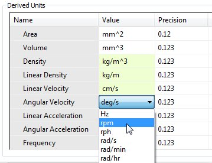
In PathFinder, right-click the part G05_62.par and then click Show Only. Choose the Fit command to see the gear.
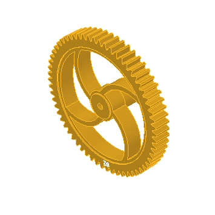
As an option, to better understand how the predefined gear relationships in this assembly, you can review the spreadsheet named clock_gears.xls, which is located in the same folder as the assembly. This spreadsheet shows the relationships and gear ratios used to create the clock mechanism.
Choose the Home tab→Motors group→Rotational Motor command
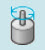
.Select the gear as the under-constrained part.
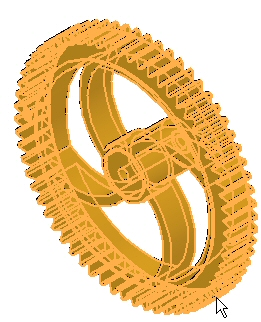
Select the interior cylindrical face to define the rotation axis.
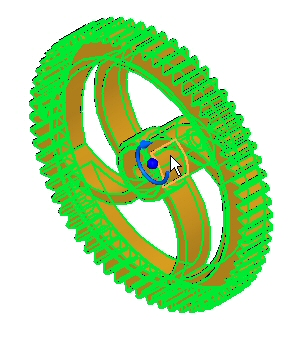
The rotation is defined as clockwise as shown. Change the direction by clicking the Flip Direction button
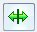
.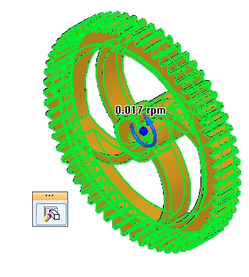
The end result should be a counterclockwise rotation as shown.
Set the rotation speed in rpm by typing 1/60 (1 revolution in 60 minutes) in the Speed field.
In the Name field, type Motor 1.
Click Finish to complete the motor definition.
On the ribbon, click the Select command and select Motor 1 in PathFinder.
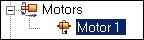
The rotation is displayed. If the rotation is counter clockwise as shown, skip the next step.
To change the direction of rotation, click Edit Definition. Click the Flip Direction button , then click Finish.
Click the Select command and right-click motor.asm in PathFinder. Click Show All.
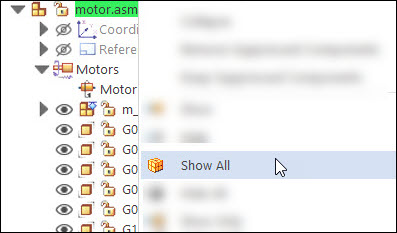
Using the same procedure as in the previous step, hide m_housing.asm, and then fit the assembly.
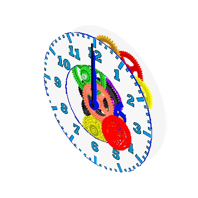
Choose the Home tab→Motors group→Simulate Motor command
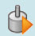
.In the Motor Group Properties dialog box, set the Motor Duration to 180 seconds (3 minutes) and the other values as shown, and then click OK.
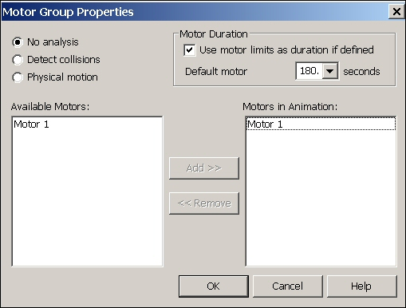
If you need to change any of these values at a later time, right-click Motors in the time line and then click Edit Definition. You can define multiple motors in a simulation but for this activity, you define a single motor.
The controls for playing the animation are shown below.
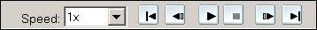
Click Play to start the animation.
As the animation is playing, increase the Speed to 4x.
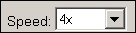
Changing the Speed to 4x is for animation display purposes only. The motor is still spinning at the assigned rpm.
Click the Stop button to halt the motor simulation.
Click Go to Start , to reset the animation to the initial point.
Set the Speed back to 1x.
Click the File tab.
Click Save. When prompted to save changes to the animation editor, click Yes.
In PathFinder, right-click motor.asm and click Show All.
Save and close the assembly. This completes the activity.
In this activity, you learned how to create and simulate a motor. The motor animation created will be used later during the explode sequence. In the activity, the following topics were covered:
-
The speed and direction of a rotational motor was defined.
-
Parameters used to define the motor were changed by an editing process.
-
The motor simulation was created and run.
-
Animation controls and time line were introduced.
-
A motor time line was created to be used in exploding and an animation.
Click the Close button in the activity window.
Answer the following questions:
-
Name two types of simulation motors.
-
How do you change the rotational units from degrees per second to revolutions per minute?
-
Can a motor that exists in a subassembly be used to apply motion to unconstrained parts in a higher level assembly? If so, explain how.
-
After a motor is defined, how do you get it to drive unconstrained parts and see the movement?
-
Can the movement created by a motor be seen during an animation, along with explosion events?
-
Name two types of motors.
The two types of motors are linear and rotational.
-
How do you change the rotational units from degrees per second to revolutions per minute?
To change the rotational units from degrees per second to revolutions per minute, click the advanced units button in file properties>units.
-
Can a motor that exists in a subassembly be used to apply motion to unconstrained parts in a higher level assembly? If so, explain how.
A motor that exists in a subassembly can be used to apply motion to unconstrained parts in a higher level assembly if the subassembly is defined as an adjustable assembly.
-
After a motor is defined, how do you get it to drive unconstrained parts and see the movement?
The simulate motor command will show the movement created by a motor.
-
Can the movement created by a motor be seen during an animation, along with explosion events?
The movement created by a motor can be seen during an animation, along with explosion events.